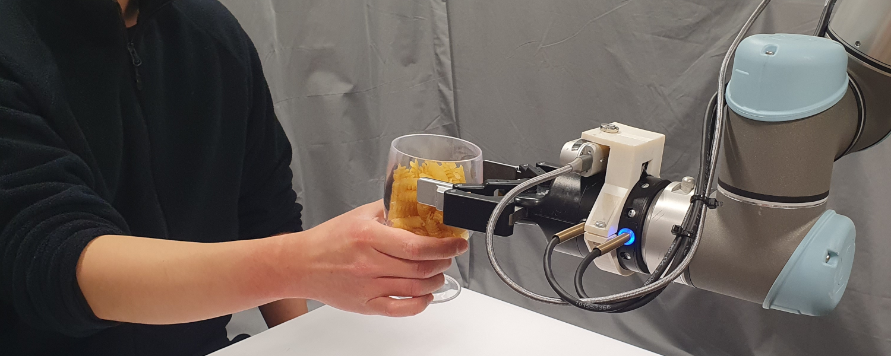

Human-to-Robot Handovers is one of the competition tracks within the 10th Robotic Grasping and Manipulation Competition (RGMC) that will be held during the IEEE/RAS International Conference on Robotics and Automation (ICRA) 2025 in Atlanta, USA.
This is a unique opportunity to benchmark your work with the state-of-the-art and advance this robotic task in real-world conditions.
Winners will receive cash prizes and certificates. Participants will also be invited to present their work at an IROS Workshop and contribute to a Special Issue (TBC).
The real-time estimation through vision perception of the physical properties of objects manipulated by humans is important to inform the control of robots and perform accurate and safe grasps of objects handed over by humans. However, estimating the physical properties of previously unseen objects using only inexpensive cameras is challenging due to illumination variations, transparencies, reflective surfaces, and occlusions caused both by the human and the robot. Our dynamic human-to-robot handovers track is based on an affordable experimental setup that does not use a motion capture system, markers, or prior knowledge of specific object models. The track focuses on food containers and drinking glasses that vary in shape and size, and may be empty or filled with an unknown amount of unknown content. The goal is to assess the generalisation capabilities of the robotic control when handing over previously unseen objects filled (or not) with unknown content, hence with a different and unknown mass and stiffness. No object properties are initially known to the robot (or the team) that must infer these properties on-the-fly, during the execution of the dynamic handover, through perception of the scene.
Track organisers
Changjae Oh, Queen Mary University of London (UK)
Andrea Cavallaro, Idiap Research Institue and École polytechnique fédérale de Lausanne (Switzerland)
Alessio Xompero, Queen Mary University of London (UK)
Yik Lung Pang, Queen Mary University of London (UK)
Contacts
If you have any questions or enquiries related to the competition track, please contact Dr. Changjae Oh or Prof. Andrea Cavallaro.
If you have any general questions or other enquiries related to the Robotic and Grasping Manipulation Competition,
please visit the RGMC webpage.